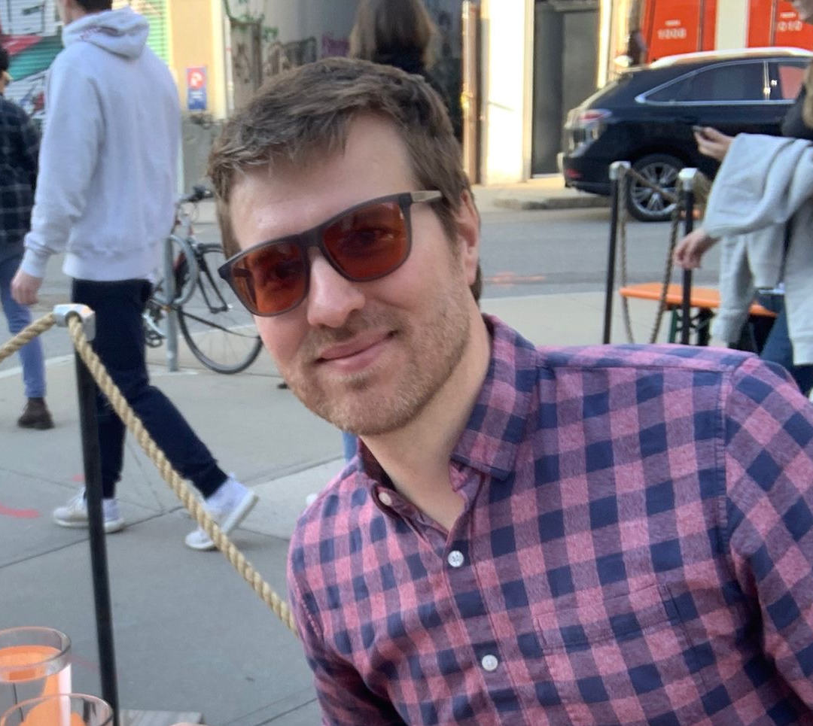

This is a true co-founding role with a major equity stake to reflect that. I'm looking for a partner to build this company with and put clean air in every building in the country.
We have working prototypes, live sensor data, and a clear technical path to a product that can be deployed in buildings. There is a lot of engineering ahead, and we haven't yet installed in a single school. But the technical direction is sound and the product vision is defined. What hasn't been built is everything around it: the sales motion, the funding strategy, the go-to-market, the company itself. That's the job.
Schools are the beachhead. Over 3 million classrooms in the US, roughly 100 of the largest districts responsible for 1 in 4 students nationally. Concentrated, scalable, and increasingly motivated by wildfire smoke, chronic absenteeism, and emerging clean air standards. Schools have an immediate need, a measurable ROI on attendance and health, and a growing number of funding mechanisms to pay for it. Building on that real demand now means we're already deployed and proven when biosecurity pressure makes air purification mainstream across every building type.
Define how schools buy clean air infrastructure. There's a hypothesis about who buys this and why, but the real answers come from being in front of districts, watching what resonates, and updating quickly. The goal is a repeatable sales motion that didn't exist before you built it.
Open the funding pathways. Air purification isn't a line item most school budgets have room for. Grants, state allocations, and a growing number of biosecurity-focused funders including the OpenAI Foundation and Coefficient Giving are committing hundreds of millions per year to this space. If we can demonstrate this at scale, large Advanced Market Commitments become a real possibility. The goal is to hand a district a clear path to yes.
Design how this scales. At some point direct sales doesn't scale. The right installers, facilities contractors, or channel partners are out there. You won't build that in the first year, but you'll start.
Everything else. The work won't stay inside these lines, and some weeks the job is just figuring out what the job is. The ability to context-switch and stay useful when the problem changes is as important as anything on this list.
You've probably done at least one of these things: sold into school districts or other institutional buyers, built a sales process from scratch in a market that didn't have one, navigated government procurement or grant funding, or figured out the go-to-market for a technical product as an early team member.
But what matters more than a specific background is how you work. Energized by ambiguity rather than slowed down by it. Willing to be wrong quickly and update. The work in the early days is hands-on and unglamorous, and the ability to stay close to it, not just strategize about it, matters a lot.
No background in air quality or schools needed. Boston-based and startup experience preferred, but neither is a requirement.

Mechanical engineer and three-time founder. Built the Tidal Air hardware and sensor-to-cloud stack. Most recently founded an anti-counterfeiting startup whose customers included Arc'teryx and Canada Goose. Previously ran business development at LeafLabs and spent time as an oilfield engineer in Oman. MIT Delta V alum and $50,000 MassChallenge winner.
Pre-seed is being led by Halcyon Futures, with Geoff Ralston (former Y Combinator president) and Matt Rogers (Nest co-founder) as angels.
There's a lot more to this than what's on this page. If any of it sounds interesting, reach out. I'm happy to talk through where things are, what I'm looking for, and whether it might be a fit.
bill@tidalairsystems.com